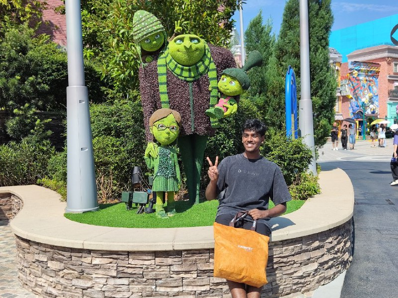

S Akash
Undergraduate Student
Electrical and Electronics Engineering
Indian Institute of Technology Patna

I am S Akash, a senior pursuing Electrical and Electronics Engineering at the Indian Institute of Technology Patna. I am interested in research involving GPU computing and faster ML Inference techniques.
A significant portion of my recent work has been through Google Summer of Code (CERN–HSF), contributing GPU-accelerated inference to TMVA SOFIE within ROOT. I collaborated closely with Sanjiban Sengupta and Lorenzo Moneta on GPU backends (CUDA, ROCm, Alpaka) and fast, minimal-dependency C++ code generation for ML inference.
During my visit to ShanHaiWoo (Singapore), co-hosted with Ethereum Singapore Week 2025 I built FlowLink, “Crypto Payments You Can Trust”. Our team was selected as a top‑5 winner at the Ethereum Singapore, and we were invited to present during TOKEN2049 Week at the ShanHaiWoo Winners’ Showcase.
Worked with Martin Kjeldsen at Unit of Measure on multimodal embeddings and large‑scale product retrieval/deduplication along with sharded vector stores to serve millions of SKUs with low latency.
With Dr Sriparna Saha, I explored LLM re‑ranking using preference‑based fine‑tuning (DPO) and RL‑based tuning (PPO) for better retrieval and quality control. In collaboration with Microsoft, our work on a hallucination-aware ranking framework for sports insights has been accepted to the main track of ECIR 2026. Read the pre-print or view the announcement. I’m now investigating KV‑cache methods for long‑context inference and throughput, focusing on flash attention mechanism.
Loading updates…